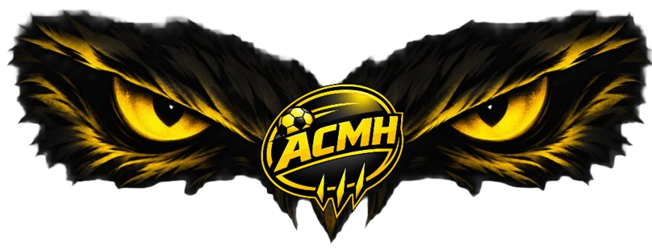

ATHLETIC CLUB DE MAGNY-LES-HAMEAUX
Il n'y a pas de secret dans la réussite
ACTUALITÉES
L'HISTOIRE NE FAIT QUE COMMENCER, RIEN DE NOTABLE POUR L'INSTANT...
Qui sommes nous?
Nous sommes un groupe d'amis passionés de football. Nous nous sommes donnés en défi de créer le 3e grand club des Yvelines, dans notre ville, Magny-les-Hameaux.
POURQUOI NOIR ET JAUNE?
Ces couleurs viennent du blason du club comme vous pouvez le voir ici.
.svg)
La partie jaune et noire avec les aiglettes vient de l'armoirie du premier seigneure de Magny-les-Hameaux. Nous avons alors décidés de reprendre ces couleurs pour faire une sorte de "conquète" en tant que seigneurs. Cependant, vu que le noir sur jaune était déjà pris par le Borusia Dortmund, nous avons inversés ces couleurs.
Pourquoi Athletic Club de Magny-Les-Hameaux?
On a choisis ce nom car le "Magny Football Club" étant déjà pris, il a fallu trouver un autre nom. Pour cela on s'est inspiré du Milan AC ou encore de l'Athletico de Madrid, 2 clubs qu'on respecte par dessus tout, pour se nommer Athletic Club de Magny-les-Hameaux.
UN PROJET SUR COMBIEN DE TEMPS, QUELS OBJECTIFS?
Tout d'abord il faut savoir que vous n'êtes pas prêts de voir le club jouer son premier match car nous n'avons pour le moment pas faits de démarche administrative pour la création de l'"ACMH". Cependant nous nous sommes donnés pour défis d'être pensionnaire de National 2 vers 2040. Un grand défi car nous ne connaissons pas la division dans laquelle nous allons débuter. Nous aimerions débuter au plus tôt, si possible dans 4 ans.
DES IDÉES D'INVESTISMENTS FUTURS?
Oui. Nous aimerions avoir notre propre stade pour notre arrivée en division Nationale. Ce stade serais au plus prêt de Magny-les-Hameaux. Il sera évident qu'il sera pour l'écologique ainsi que pour la protection de l'écosystème des environs. Aucune démarche lancée pour le moment pour le stade.
AU NIVEAU DES EFFECTIFS, QUELLE POLITIQUE DE RECRUTEMENT OU DE LICENCIMENT SERA APPLIQUÉE?
Nous aimerions nous livrer à une politique de licenciment tournée vers les Manycois, surtout les jeunes. Cependant nous voulons avoir des effectifs à un niveau très élevés pour pouvoir être le plus compétiteur possible et atteindre nos objectifs. Au niveau des recrutement on sera ouvert à toutes arrivées.
Ceci n'est pas un site, c'est une histoire.